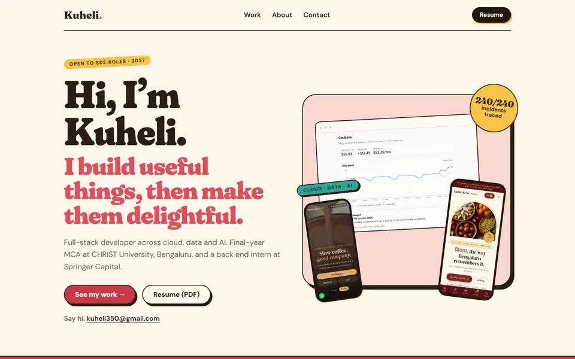
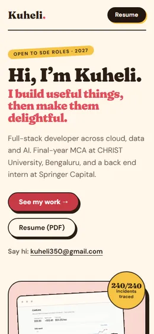
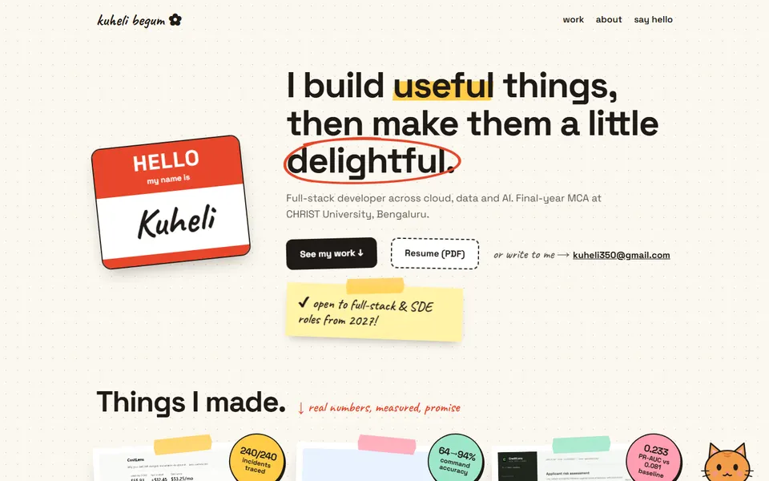
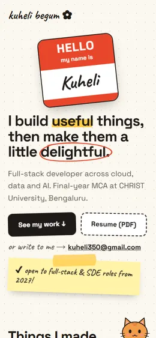
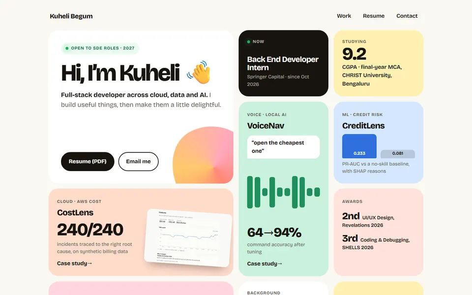
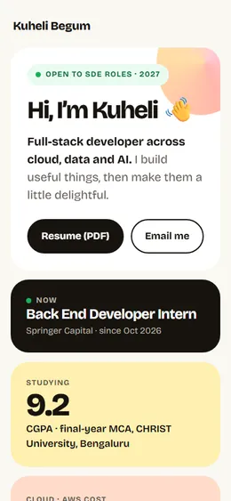

MOCK 1
Café Bold
Your own Brew & Bounce style. Cream and cocoa, a chunky serif, coral and butter, tilted tags and offset shadows. Warm, confident, a bit loud.
Each one is a small, hard-coded sample with real content and real numbers, so you can judge the feel. Open each one full size, scroll, hover, click around. Then tell me which you like.


Your own Brew & Bounce style. Cream and cocoa, a chunky serif, coral and butter, tilted tags and offset shadows. Warm, confident, a bit loud.


The cutest one. Name-tag sticker, taped polaroids, handwriting, a receipt of your achievements, a postcard to recruiters, and a cat in the corner you can tap.


The cleanest one. Everything on one screen in colorful tiles. Fastest for a recruiter to scan, with small playful touches like the waving hand and fanning phones.
For example: "colors from 1, the receipt and cat from 2, layout from 3." Tell me what you love and what you don't, and I'll build the real site that way, keeping the videos and case studies.